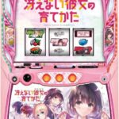
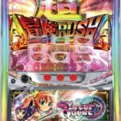
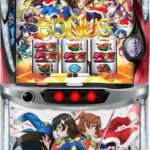
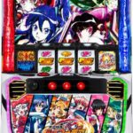
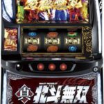
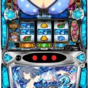

← 資料一覧 さ行  L冴えない彼女の育て方 OFF 咲‐Saki‐ 頂上決戦 OFF 各サブスク（note）の紹介 OFF Lサラリーマン金太郎 OFF  Lシスタークエスト OFF L忍魂参 OFF L島娘 OFF Lシャーマンキング OFF L主役は銭形 OFF 主役は銭形5 OFF L賞金首 Angel OFF  L少女☆歌劇 レヴュースタァライト ‐The SLOT‐ OFF L真・一騎当千 OFF 真打吉宗 OFF Lシン・エヴァンゲリオン OFF 新鬼武者3 OFF  Lシンフォギア OFF  L真北斗無双 OFF LG1優駿倶楽部黄金 OFF Lスカイラブ OFF Lストライクウィッチーズ OFF Lストライク・ザ・ブラッド OFF LストリートファイターV OFF Lスーパービンゴネオ OFF 【スロ塾式リセ狙い】Lスーパービンゴネオ～期待値表も添えて～ OFF Lスーパーブラックジャック OFF スーパーリオエース2 OFF L聖闘士星矢海皇覚醒 OFF L聖闘士星矢海皇覚醒（リセイヤ） OFF 戦国乙女5 業火を穿つ宿焔の双刃 OFF L戦国乙女4 OFF  L閃乱カグラ OFF 絶対衝激IV OFF L 絶対衝激～PLATONIC HEART～ OFF ソードアート・オンラインII OFF Lゾンビランドサガ OFF 転生シャッター狙い実践データ OFF 北斗の拳 転生の章2 OFF